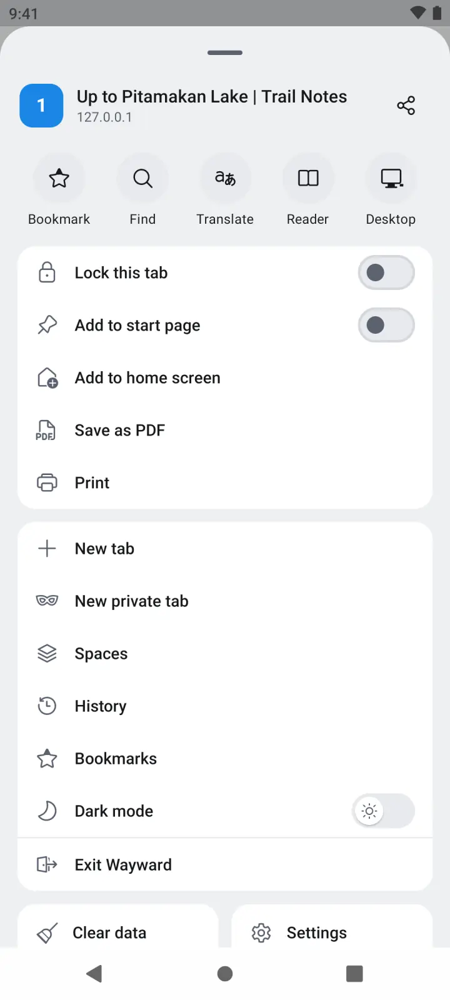
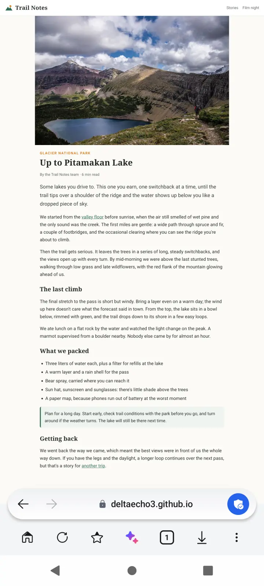
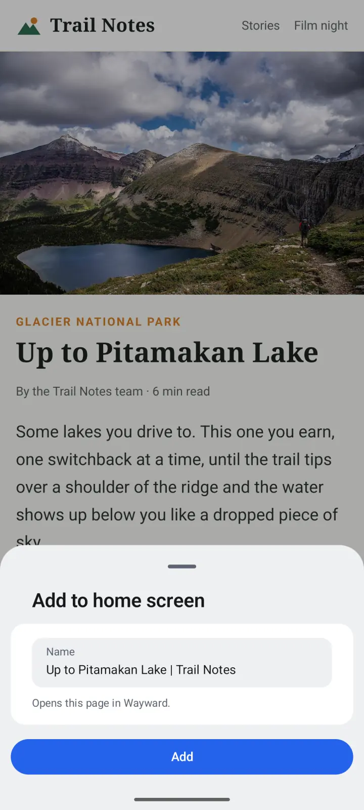
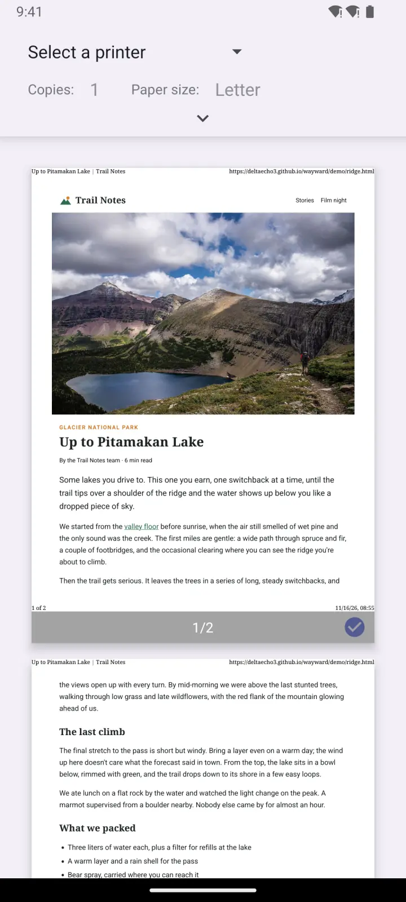
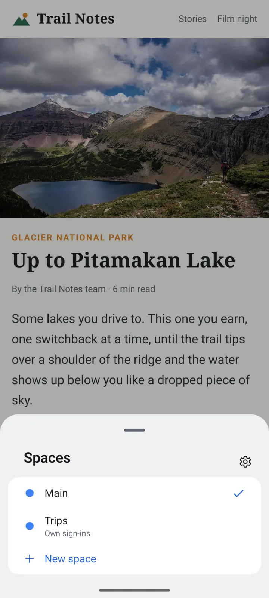
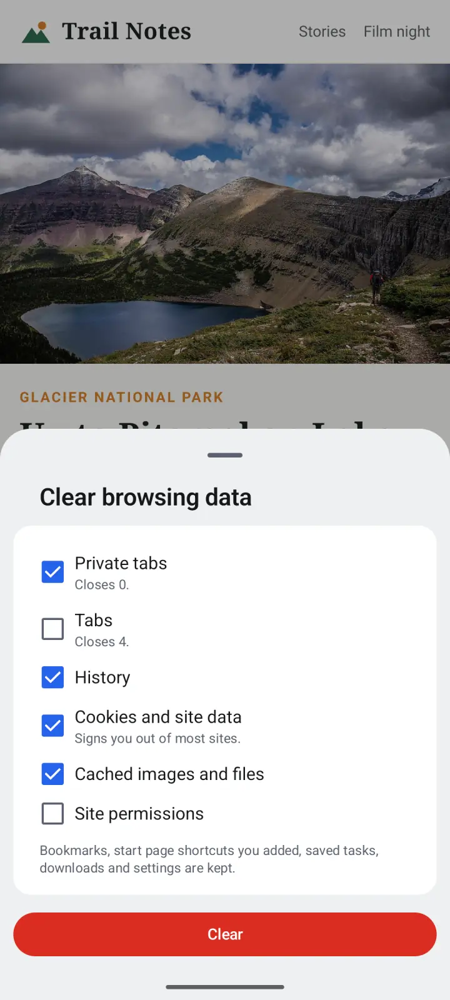
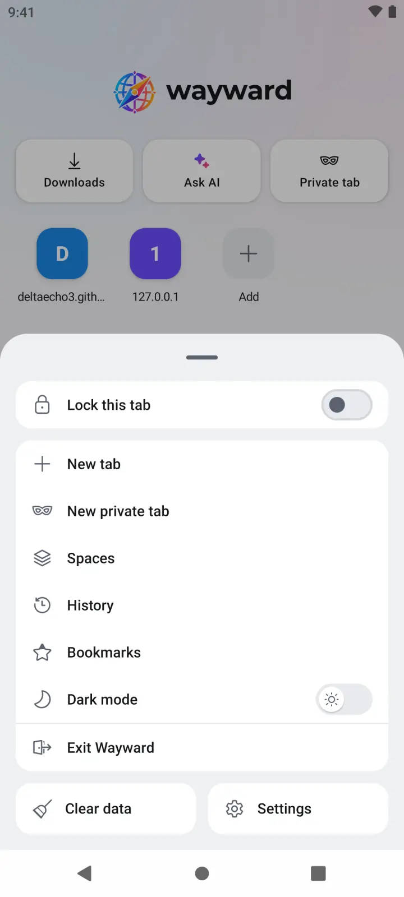

Find your way around the menu
How-to
Use the menu to work with the current page or open another part of Wayward. Open it with the ⋮ button at the right end of the bottom bar.

At the top
The page's name and site, with a Share button. Share sends a clean link: Wayward takes tracking tags out of the address first.
Under that, a row of round buttons for the page:
- Bookmark saves the page, or removes it if it's saved (the star is filled while it is).
- Find searches for words on the page.
- Translate translates the page on your phone. On a translated page it's lit, and a tap shows the original again.
- Reader shows the page as plain text, easy to read. It's only there on pages that read as an article.
- Desktop asks for the page as a computer would see it, for this tab.
- Dark turns dark mode on or off. It's hidden until you show it: see Turn on dark mode.

This page
- Lock this tab puts the tab behind your fingerprint, face or PIN. Turning it on or off asks for your unlock.
- Add to start page adds the page as a shortcut on Wayward's start page. It asks for the shortcut's name first, then Add. Tap it again to take the shortcut off.
- Add to home screen puts the page on your phone's home screen. Name it, and the dialog says how it will open: Opens as an app, in its own window. for a site that works as an app, or Opens this page in Wayward. Tap Add, then confirm in your phone's own dialog.
- Save as PDF saves the page as a PDF in Downloads. You'll see Saving as PDF…, then Saved to Downloads.
- Print opens your phone's print screen, where you can print the page or save it as a PDF somewhere else.


The rest of Wayward
- New tab and New private tab.
- Spaces opens a picker to switch space, or make a new one.
- History and Bookmarks open those screens.
- Dark mode switches Wayward and websites dark together, or both light.

At the very bottom, side by side:
- Clear data opens Clear browsing data, where you pick what to clear: private tabs, tabs, history, cookies and site data, cached images and files, or site permissions. Your bookmarks, start page shortcuts, saved tasks, downloads and settings are always kept.
- Settings.

On the start page, and in private tabs
On the start page there's no page, so the menu has no header and no round buttons: just the rows that apply there, and Clear data and Settings.

In a private tab, the menu takes on the private tabs' colors. Add to home screen isn't there: the shortcut would outlast the private tab.
Add to start page is left out in a few places: a locked tab, a tab in a locked space, when new tabs open on your search engine's page (the start page never shows then), and when the start page's own shortcuts are switched off in Settings > Customize.
Make it yours
You can move the menu's items up or down inside their group, and hide the ones you don't use. Settings always stays. See Reorder or hide menu items.
If something doesn't work
- This phone's home screen doesn't take shortcuts: your home screen app doesn't let apps add shortcuts. Try another home screen app, or use Add to start page instead.
- Already on your home screen: name and icon updated: the page was there already, so Wayward updated it rather than adding it twice.
- This page couldn't be saved as a PDF or This page can't be printed right now: try again once the page has finished loading. Some pages block it.
- Android's print service isn't available here: this copy of Android has no print screen. It happens with some phones' second copies of apps (dual apps). Use Save as PDF instead.